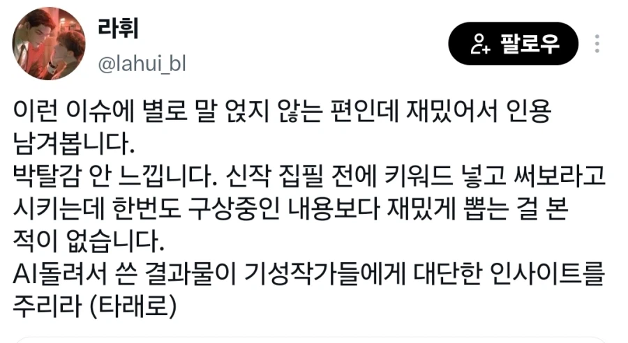
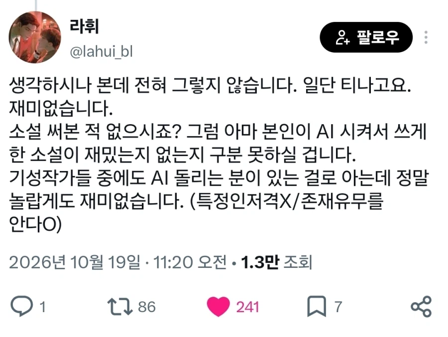
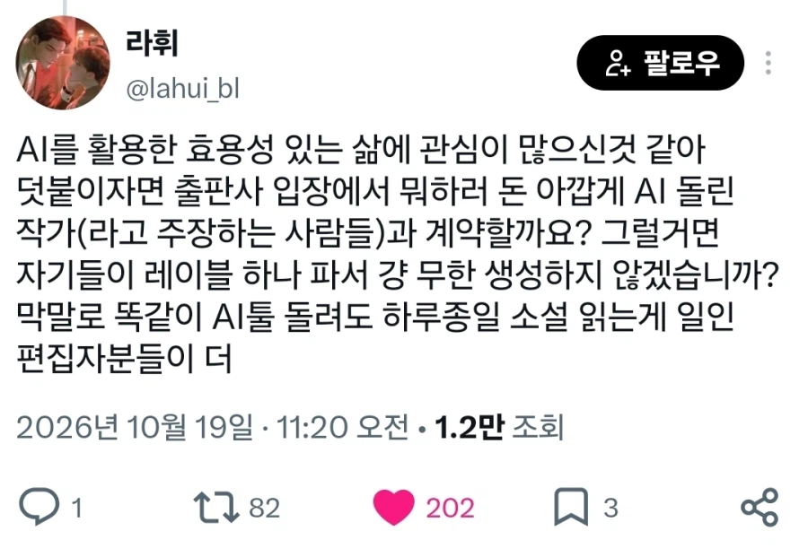

읽지도 써보지도 않은 놈들이라 Ai가 뱉은게 좋은지 나쁜지도 구분을 못하니까 욕을먹지.
쇠맛나는 글들이 티가 나게 질이 나쁘니까 독자들이 싫어하는건데 뭔 거부감이니 뭐니 하고있어.



읽지도 써보지도 않은 놈들이라 Ai가 뱉은게 좋은지 나쁜지도 구분을 못하니까 욕을먹지.
쇠맛나는 글들이 티가 나게 질이 나쁘니까 독자들이 싫어하는건데 뭔 거부감이니 뭐니 하고있어.
맞음 난제풀때도 지 맘대로 논리 만들어서 수학자들한테 증명 '해줘' 하는데 소설은 더할수밖에 없음
인간 작가 머리속엔 구상이 있고 표현력 여하에 따라 소설이 전개되는데 AI가 하면 장기적으론 무조건 전개가 이해안되고 등장인물들 행적이 엉망됨 그때부턴 오히려 작가가 짜맞추는데 시간이 더들음
진짜 밑도끝도없이 딸깍이니까 그렇지
시놉시스는 내가 생각함
줄거리 1~2줄 넣음
딸깍
검수
이렇게 하면 티 안나긴함
물론 이건 실력있는놈이 해야되긴함
해봐서 아는데 이렇게로는 부족해. 그 딸깍 부분이 참...
시놉시스도 뽑아달라고 함. 뽑아보고 마음에 안드는 부분 수정및 추가하고 일단 초고 돌림. 돌리고 그걸 바탕으로 작성 시작하면 문장 표현 같은 거 한결 쉬워짐. 기초 작업이 빨라져. 물론 시놉시스 짤 때 큰 틀이랑 이벤트를 대략적으로 지정해주고. 이벤트와 이벤트로 이동할때 막히던 부분이 빠르게 진행됨.
현존 최고 모델 쓰는데도 개구림 걍 ai는 아직까지 퇴고 수준정도야
걍 로컬llm 좀 건들다보면 쇠맛이란게 뭔지 알게되더라
클로드 맛탱이가면 사이좋게 휴재하는 작가들ㅋㅋㅋ
장기기억은 많이 개선 되었음 그 발전은 1년 전에 비해서 확실히 체감함
하지만 결국 쓰더라도 문체 완급, 호흡, 연출 완급 등의 디테일을 작가가 주고 싶을 때 세부적인 마이크로 매니징 또는 퇴고가 들어감. 초고 작성 용도라면 나쁘지 않을지도 몰라(자기가 구성한 플롯 요건과 사건의 긴밀함. 대사, 즉 퇴고 검수역량이 있다면)
하지만 그걸 안 한다면 결국 쇠냄새라고 통칭하는 균일함이 발목을 잡게 될거임 길면 길어질수록
네말대로 부스팅 용도로 적합한데
눈깔이 병신이라 쇠맛 그득한걸 구분도 못하는 병신들이 지한텐 재밌다고 연재하는게 문제긴 해
아니 애초에 지도 안 읽어보고 그냥 올리는 새끼들도 있음 ㄹㅇ
악화가 양화를 구축한다는게 진짜 정확함
요즘 심해탐사 안 떠난지 꽤 됐음 심해 다이브 들어가면 죄다 쇠맛이라 걍 안 하고 말지
작가라는놈이 씨발 작가()과 이지랄해놨네
하룻밤묶어갔다 묶고갔다 뭐뭐하느냐고 이지랄로쓴 글들 볼때마다 뺨아리마려운데
글은 본인이 쓰고 설정이라던가 전후 사정 등장인물등 저장해두면 도움되지 않을까
그림쟁이였던것 입장으로 보자면.. 받아들이면 쉬움 사용 안해서 그렇지 초안 잡거나 막힌곳 풀어주기 딱좋음. 몇번 사용해보면 최종검수와 핀포인트 수정만 하면 50% 는 만족하는 결과물이 나옴. 어차피 100%는 사람손으로 해도 안나옴 소비자들이 존나 싫어해도 한번 먹히면, 점점 여론이 바뀜
컨텐츠에 ai썼으면 ai썼다고 표시나 좀 제대로 해라
문체의 투박함까지를 매력으로 볼 수 있지
ai는 그게 없음. 우연히 잘 학습했다 해도 그거만 답습함
AI를 썼다고 욕먹는게 아님 AI소설을 양산해서 소설시장 자체를 망가뜨리니 문제지..
너도나도 찍어내다보니 소설 등록건수만 수십배가 늘어났고. 그덕분에 정말 재미있는 소재, 재능있는 사람들이 AI양산 소설에 묻혀버리고 흥미를 잃게 되어버림 악순환의 반복이지
애초에 장기로 끌고 가질 못함
이번에 ai로 밀레니엄 문제를 풀었잖음?
근데 그게 방구석 개붕이가 밀레니엄 문제를 풀 수 있다는 의미겠냐고, 수학적으로도 석박사에 달하는 전문지식이 있는 사람이 ai를 고도로 활용할 줄 알아야 가능한거지.
마찬가지로 소설 한줄 안읽고 'ai로 월천킥 작가' 유튜브 쇼츠보고 도전하는 놈들이 월천 버는 작가가 되겠음? 당연히 이 업계에서 4년 8년 구른 사람이 ai까지 전문적으로 활용해야 월천 수익이 나오는 거지.
ai는 저점을 올려주지만 그렇게 올린 저점에는 개인사업자에겐 아무 의미가 없음. 그 누구도 유튜브 딸깍 섬네일을 하청주지 않는 것처럼.
ai로 부업하려면 역설적으로 전문가가 되야하는 시대임.